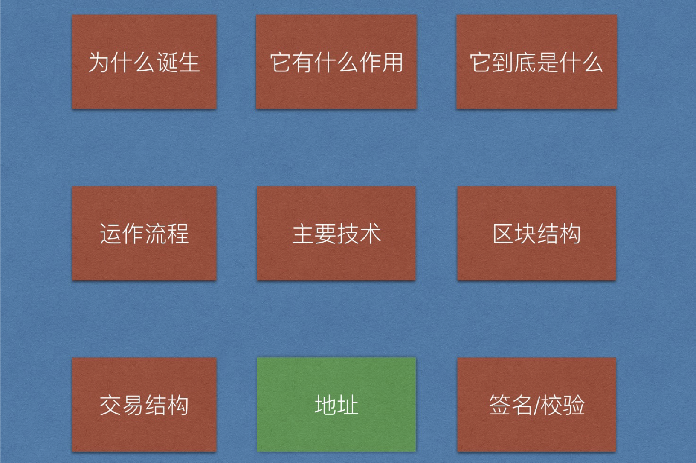

概述
1. 存在问题
地址是用字符串代替的（用张三来代表地址）
没有校验（需要对交易进行数字签名校验）
2. 授课思路
创建秘钥对->公钥->地址（使用椭圆曲线算法生成私钥、由私钥生成公钥）
改写代码（使用地址，公钥私钥改写代码）
交易签名校验（创建交易时使用使用私钥对交易进行签名）
- 校验（打包交易之前对交易进行校验）
一、项目地图

二、非对称加密
1. 签名校验图示

比特币使用ECC（椭圆曲线）算法生成非对称加密对。
RSA-->比较常用的非对称加密算法
ECC-->比特币使用非对称加密算法
非对称加密算法有RSA、ECDSA，对极大整数做因数分解的难度决定了RSA算法的可靠性，
ECDSA为椭圆曲线加密算法，是基于椭圆方程公式，所以安全性要高于RSA。
- golang封装的
ecdsa目前只有用私钥加密，公钥做校验，没有解密环节；所以目前可以应用于数字签名；
2. 需要签名的内容
- 签名需要什么？
- 想要签名的数据
- 私钥
- 验证需要什么？
- 想要签名的数据
- 数字签名
- 公钥
3. ECDSA演示
那么我们开始写demo，思路如下：
创建私钥
创建公钥
- 私钥签名
- 公钥验证
package main
import (
"crypto/ecdsa"
"crypto/elliptic"
"crypto/rand"
"fmt"
"log"
"crypto/sha256"
"math/big"
)
//1. 使用椭圆曲线算法生成一对：公钥+私钥
//2. 使用私钥进行签名
//3. 使用公钥进行校验
//注意，goland内置的椭圆曲线库支持签名校验，不支持公钥加密，私钥解密
func main() {
//1. 使用椭圆曲线算法生成一对：公钥+私钥
// GenerateKey generates a public and private key pair.
//func GenerateKey(c elliptic.Curve, rand io.Reader) (*PrivateKey, error) {
curve := elliptic.P256()
//研究一下rand.Reader
randNumber := rand.Reader
fmt.Println("randNumber:", randNumber)
privateKey, err := ecdsa.GenerateKey(curve, rand.Reader)
if err != nil {
log.Panic(err)
}
//2. 使用私钥进行签名
data := "hello world!"
//func Sign(rand io.Reader, priv *PrivateKey, hash []byte) (r, s *big.Int, err error) {
randNumber1 := rand.Reader
fmt.Println("randNumber1:", randNumber1)
dataHashed := sha256.Sum256([]byte(data))
r, s, err := ecdsa.Sign(randNumber1, privateKey, dataHashed[:])
if err != nil {
log.Panic(err)
}
signature := append(r.Bytes(), s.Bytes()...)
fmt.Printf("signature : %x\n", signature)
//3. 使用公钥进行校验
//通过私钥获取公钥
//为什么不能使用Public()函数呢？？
publicKey := privateKey.PublicKey
//func Verify(pub *PublicKey, hash []byte, r, s *big.Int) bool {
flag := ecdsa.Verify(&publicKey, dataHashed[:], r, s)
//flag := ecdsa.Verify(&rawPublicKey, dataHashed[:], r, s)
fmt.Printf("verify result : %v\n", flag)
}
三、生成比特币地址
1. 地址规则
对随机字符串进行哈希，生成32字节的私钥

2. 地址生成流程

在线生成地址（不可靠，只为了演示）
BitCoinAddress(相当有意思的地址，生成真实可用的地址)
四、创建地址
1. 分析
- 定义一个结构，包含公钥私钥两个变量
- 提供一个方法：生成公钥私钥
- 提供一个方法：由公钥生成地址
2. 定义wallet结构
//定义钱包结构，包括私钥和公钥
type Wallet struct {
//首字母一定要大写，否则后面gob编码时会出错(用于保存)
PrivateKey ecdsa.PrivateKey
//由两个坐标点拼接而成的临时公钥，便于传输，校验时进行拆分，还原成原始的公钥
PublicKey []byte
}
由于我们不想在交易中传递公钥本身，想传递[]byte，所以我们将公钥拆分成两个[]byte变量。
将他们append成一个[]byte后存放在公钥字段。
在verify之前一直把这个拼接的byte数组当成公钥。
在verifty时将它再拆成X, Y 两个big.Int 类型的数据，然后拼装成真实的公钥
(具体方式回忆一下pow时引用的big.Int: Bytes()，setBytes())
在demo中添加下面的代码并测试：
func main() {
...
publicKey := privateKey.PublicKey
//新增
//拆分成两个数，拼接成一个[]byte进行传递
fmt.Printf("X.Btytes: %x\n", publicKey.X.Bytes())
fmt.Printf("y.Btytes: %x\n", publicKey.Y.Bytes())
//这个就是即将存储在wallet中的publicKey
publicKeyTmp := append(publicKey.X.Bytes(), publicKey.Y.Bytes()...)
//...
//传递到接收端
len := len(publicKeyTmp)
x := big.Int{}
y := big.Int{}
//对端接收后进行拆解
x.SetBytes(publicKeyTmp[:len/2])
y.SetBytes(publicKeyTmp[len/2:])
curve1 := elliptic.P256()
//重新拼出原始的公钥
rawPublicKey := ecdsa.PublicKey{curve1, &x, &y}
//检验
flag := ecdsa.Verify(&rawPublicKey, dataHashed[:], r, s)
fmt.Printf("verify result : %v\n", flag)
}
3. 创建wallet方法
//2. 创建钱包结构的方法
func NewWallet() *Wallet {
curve := elliptic.P256()
//a. 生成私钥
privateKey, err := ecdsa.GenerateKey(curve, rand.Reader)
if err != nil {
log.Panic(err)
}
//由私钥生成公钥
rawPubKey := privateKey.PublicKey
//把公钥拆分成[]byte
publicKey := append(rawPubKey.X.Bytes(), rawPubKey.Y.Bytes()...)
return &Wallet{*privateKey, publicKey}
}
4. 添加命令（createWallet）
- 调整代码
修改Usage：
const Usage = `
...
createWallet "create a new key pair wallet and save into wallet.dat"
`
修改Run函数：
case "createWallet":
cli.CreateWallet()
添加CreateWallet函数：
func (cli *CLI)CreateWallet() {
//只是打印钱包即可
wallet := NewWallet()
fmt.Printf("private key : %x\n", wallet.privateKey)
fmt.Printf("public key : %x\n", wallet.publicKey)
}
- 测试

5. 由公钥生成地址
- 分析
- 通过公钥生成地址
- 对公钥进行哈希处理: RIPEMD160(sha256())
- 获取校验码: checksum()
- 拼接: version + hash + checksum
- 对公钥哈希做base58处理
ripe160.tar.gz 解压命令
tar zxvf ripe160.tar.gz -C $GOPATH/src
- 代码
func (w *Wallet) getAddress() []byte {
//a. 对公钥进行哈希处理: RIPEMD160(sha256())
ripemdHash := HashPubKey(w.publicKey)
payload := append([]byte{version}, ripemdHash[:]...)
//b. 获取校验码: checksum()
checkCode := checksum(payload)
//c. 拼接: version + hash + checksum
pubKeyHash := append(payload, checkCode...)
fmt.Printf("pubKeyHash : %x\n", pubKeyHash)
//d. base58
address := Base58Encode(pubKeyHash)
return address
}
func checksum(payload []byte) []byte {
hashFirst := sha256.Sum256(payload)
hashSecond := sha256.Sum256(hashFirst[:])
checkCode := hashSecond[:4]
return checkCode
}
func HashPubKey(publicKey []byte) []byte {
hash256 := sha256.Sum256(publicKey)
ripemd160Hasher := ripemd160.New()
_, err := ripemd160Hasher.Write(hash256[:])
if err != nil {
log.Panic(err)
}
ripemdHash := ripemd160Hasher.Sum(nil)
return ripemdHash
}
- base58
使用内置的库，github上有，是btcd的一个库。
duke ~/btc/btcd$ git remote -v
origin https://github.com/btcsuite/btcd.git (fetch)
origin https://github.com/btcsuite/btcd.git (push)
import "github.com/btcsuite/btcutil/base58"
下面这段代码是自己写的base58.go，不稳定，了解即可，不建议使用**
package main
import (
"bytes"
"math/big"
)
var b58Alphabet = []byte("123456789ABCDEFGHJKLMNPQRSTUVWXYZabcdefghijkmnopqrstuvwxyz")
// Base58Encode encodes a byte array to Base58
func Base58Encode(input []byte) []byte {
var result []byte
x := big.NewInt(0).SetBytes(input)
base := big.NewInt(int64(len(b58Alphabet)))
zero := big.NewInt(0)
mod := &big.Int{}
for x.Cmp(zero) != 0 {
x.DivMod(x, base, mod)
result = append(result, b58Alphabet[mod.Int64()])
}
ReverseBytes(result)
for b := range input {
if b == 0x00 {
result = append([]byte{b58Alphabet[0]}, result...)
} else {
break
}
}
return result
}
// Base58Decode decodes Base58-encoded data
func Base58Decode(input []byte) []byte {
result := big.NewInt(0)
zeroBytes := 0
for b := range input {
if b == 0x00 {
zeroBytes++
}
}
payload := input[zeroBytes:]
for _, b := range payload {
charIndex := bytes.IndexByte(b58Alphabet, b)
result.Mul(result, big.NewInt(58))
result.Add(result, big.NewInt(int64(charIndex)))
}
decoded := result.Bytes()
decoded = append(bytes.Repeat([]byte{byte(0x00)}, zeroBytes), decoded...)
return decoded
}
// ReverseBytes reverses a byte array
func ReverseBytes(data []byte) {
for i, j := 0, len(data)-1; i < j; i, j = i+1, j-1 {
data[i], data[j] = data[j], data[i]
}
}
- 测试
func (cli *CLI)CreateWallet() {
//只是打印钱包即可
wallet := NewWallet()
fmt.Printf("private key : %x\n", wallet.privateKey)
fmt.Printf("public key : %x\n", wallet.publicKey)
//注意是使用%s打印的
fmt.Printf("address : %s\n", wallet.getAddress())
}
- 结果

五、保存私钥对
比特币客户端可以生成无数多个秘钥对，将它们持久化，保存在一个wallets.bat文件中，
我们想要实现同样的功能，定义一个装秘钥钱包的容器Wallets，保存所有的钱包秘钥对。
1. 定义钱包容器
新建一个wallets.go文件，使用map存储，key是地址，value是钱包指针，这样就能够将地址和钱包对应上了。
//定义一个容纳所有钱包的容器
type Wallets struct {
//key:地址 value：钱包
WalletsMap map[string]*Wallet
}
- 分析
对钱包的操作分为三步：
- 从本地加载已有的钱包到内存
- 添加新的钱包到内存
- 将内存中的钱包保存到本地
2. 创建钱包容器
创建钱包实例并从文件中加载钱包
//创建钱包容器, 这个函数在commands.go里面调用，负责打开钱包
func NewWallets() *Wallets {
//打开钱包
var ws Wallets
ws.WalletsMap = make(map[string]*Wallet)
//加载
//TODO
return &ws
}
3. 提供一个创建新钱包的方法
对外我们只暴露这个接口即可。
func (ws *Wallets) CreateWallet() string {
wallet := NewWallet()
fmt.Printf("string(wallet.getAddress()): %s\n", string(wallet.getAddress()))
address := fmt.Sprintf("%s", wallet.getAddress())
fmt.Printf("Sprintf address %s\n", address)
//直接赋值
ws.WalletsMap[string(wallet.getAddress())] = wallet
return string(wallet.getAddress())
}
4. 测试
func (cli *CLI) CreateWallet() {
//只是打印钱包即可
//wallet := NewWallet()
ws := NewWallets()
address := ws.CreateWallet()
//fmt.Printf("private key : %x\n", wallet.privateKey)
//fmt.Printf("public key : %x\n", wallet.publicKey)
fmt.Printf("address : %s\n", address)
}

5. 存储到本地
- 使用gob进行编码，转化成[]byte
- 使用ioutil.WriteFile写文件
- gob四个参数（后三个）必须都是地址
func (ws *Wallets) SaveToFile() {
var content bytes.Buffer
encoder := gob.NewEncoder(&content)
err := encoder.Encode(ws)
if err != nil {
log.Panic(err)
}
err = ioutil.WriteFile(walletFileName, content.Bytes(), 0644)
if err != nil {
log.Panic(err)
}
}
再次执行创建命令时，报错如下：

原因：
如果Encode/Decode类型是interface或者struct中某些字段是interface{}的时候，需要在gob中注册interface可能的所有实现或者可能类型，否则会上面的错误。参考链接
我们钱包中的elliptic.Curve是interface类型的，如图所示：

解决办法为：
func (ws *Wallets) SaveToFile() {
var content bytes.Buffer
gob.Register(elliptic.P256()) //<<-----加上这句，注册一个interface对象
encoder := gob.NewEncoder(&content)
err := encoder.Encode(ws)
...
}
重新编译即可通过。
6. 测试
略
7. 从本地加载
添加函数LoadFromFile，注意要使用地址传递func (ws *Wallets)
func (ws *Wallets) LoadWalletFromFile() error {
_, err := os.Stat(walletFileName)
if os.IsNotExist(err) {
return err
}
content, err := ioutil.ReadFile(walletFileName)
if err != nil {
return err
}
var wsLocal Wallets
gob.Register(elliptic.P256())
decoder := gob.NewDecoder(bytes.NewReader(content))
err = decoder.Decode(&wsLocal)
if err != nil {
return err
}
ws.WalletsMap = wsLocal.WalletsMap
return nil
}
8. 更新NewWallets
//获得钱包容器实例，加载到内存中
func NewWallets() *Wallets {
//打开
//为什么可以返回局部变量的地址啊？？ 这特么在C++中就是野指针。
var ws Wallets
ws.WalletsMap = make(map[string]*Wallet)
//加载
err := ws.LoadWalletFromFile()
if err != nil {
log.Panic(err)
}
return &ws
}
9. 获取所有地址
func (ws *Wallets) GetAllAddresses() []string {
var addressContainer []string
for address := range ws.WalletsMap {
addressContainer = append(addressContainer, address)
}
return addressContainer
}
10. 添加命令（listAddresses）
- 调整代码
修改Usage：
const Usage = `
...
listAddresses "list all addresses in wallet.dat"
`
修改Run:
case "listAddresses":
cli.ListAddresses()
添加函数ListAddresses
func (cli *CLI) ListAddresses() {
ws := NewWallets()
for i, address := range ws.GetAllAddresses() {
fmt.Printf("address[%d] : %s\n", i, address)
}
}
- 测试